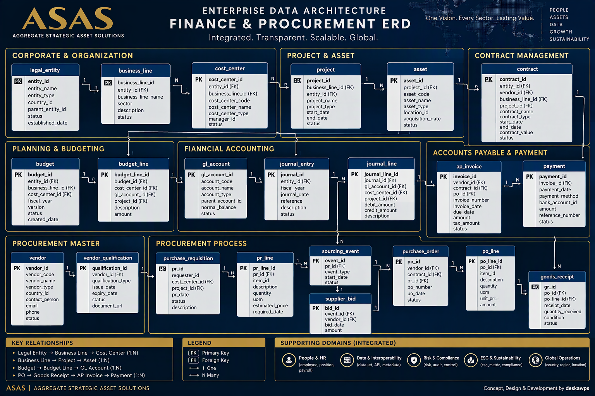

Integrated model untuk budgeting, accounting, vendor, sourcing, purchase order, goods receipt, accounts payable, payment, approval, dan audit trail.
Relationship blueprint untuk menghubungkan cost center, project, contract, procurement, dan finance secara konsisten.

Accounting terhubung melalui GL, journal, cost center, project, dan audit evidence.